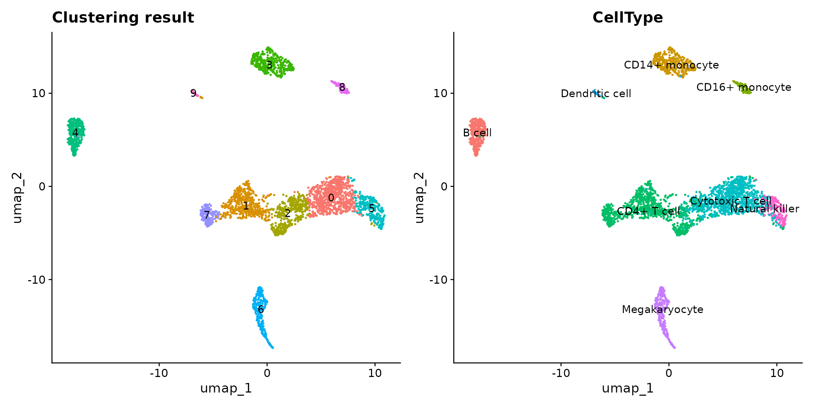
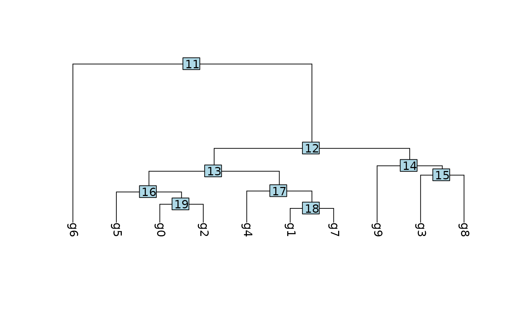
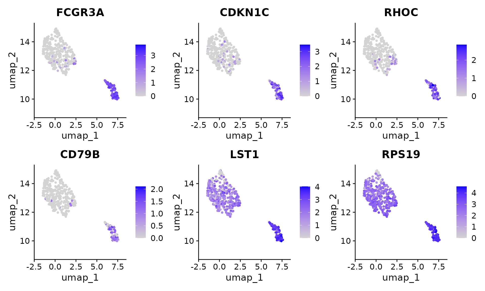
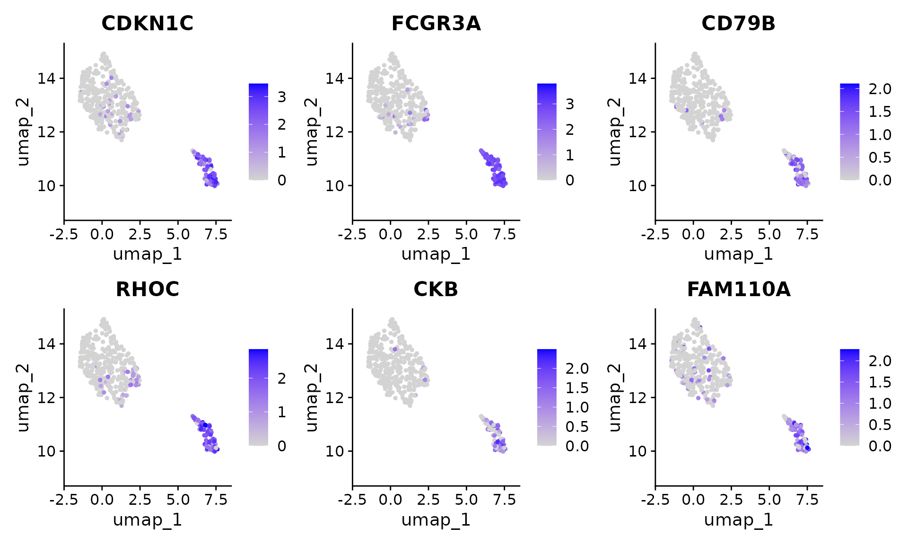

Perform ClusterDE on a monocyte scRNA dataset
Dongyuan Song
Department of Genetics & Genome Sciences, UConn HealthBioinformatics IDP, University of California, Los Angelesdongyuansong@ucla.edu
20 August 2026
Source:vignettes/ClusterDE-monocyte-scrna.Rmd
ClusterDE-monocyte-scrna.RmdDownload data
The PBMC datasets are originally from SeuratData. We use one of them (10x Chromium (v3) from PBMC1 replicate). We filtered out some lowly epxressed genes to save computational time here.
data(pbmc, package = "ClusterDE")Run the regular Seurat pipeline
We perform the default Seurat clustering. Note that in real data analysis, the cell type label is usually unknown.
RNGkind("L'Ecuyer-CMRG")
seed <- 123
set.seed(seed)
pbmc <- Seurat::UpdateSeuratObject(pbmc)
#> Validating object structure
#> Updating object slots
#> Ensuring keys are in the proper structure
#> Warning: Assay RNA changing from Assay to Assay
#> Ensuring keys are in the proper structure
#> Ensuring feature names don't have underscores or pipes
#> Updating slots in RNA
#> Validating object structure for Assay 'RNA'
#> Object representation is consistent with the most current Seurat version
pbmc <- Seurat::NormalizeData(pbmc)
pbmc <- Seurat::FindVariableFeatures(pbmc)
pbmc <- Seurat::ScaleData(pbmc)
#> Centering and scaling data matrix
pbmc <- Seurat::RunPCA(pbmc)
#> PC_ 1
#> Positive: IL32, CCL5, TRBC2, TRAC, CD69, CST7, RORA, CTSW, SPOCK2, ITM2A
#> GZMM, CD247, TRBC1, C12orf75, IL7R, CD8A, CD2, LDHB, GZMA, CD7
#> NKG7, CD6, GZMH, CD8B, BCL11B, PRF1, LYAR, LTB, FGFBP2, TCF7
#> Negative: LYZ, FCN1, CLEC7A, CPVL, SERPINA1, SPI1, S100A9, AIF1, NAMPT, CSTA
#> CTSS, MAFB, MPEG1, NCF2, VCAN, FGL2, S100A8, TYMP, CST3, LST1
#> CYBB, CFD, FCER1G, SLC11A1, TGFBI, GRN, CD14, PSAP, SLC7A7, MS4A6A
#> PC_ 2
#> Positive: RPL10, EEF1A1, TMSB10, RPS2, RPS12, RPL13, RPS18, RPS23, RPLP1, TPT1
#> RPS8, IL32, S100A4, PFN1, RPLP0, NKG7, ARL4C, HSPA8, CST7, ZFP36L2
#> ANXA1, CTSW, S100A6, LDHA, CORO1A, CD247, GZMA, CALR, S100A10, GZMM
#> Negative: NRGN, PF4, SDPR, HIST1H2AC, MAP3K7CL, PPBP, GNG11, GPX1, TUBB1, SPARC
#> CLU, PGRMC1, FTH1, RGS18, MARCH2, TREML1, HIST1H3H, AP003068.23, NCOA4, ACRBP
#> TAGLN2, PRKAR2B, CD9, CA2, CMTM5, CTTN, MTURN, TMSB4X, HIST1H2BJ, TSC22D1
#> PC_ 3
#> Positive: CD79A, HLA-DQA1, MS4A1, LINC00926, IGHM, BANK1, IGHD, TNFRSF13C, HLA-DQB1, CD74
#> IGKC, HLA-DRA, BLK, CD83, CD37, CD22, ADAM28, JUND, NFKBID, HLA-DRB1
#> P2RX5, CD79B, VPREB3, IGLC2, FCER2, RPS8, LTB, RPS23, TCOF1, GNG7
#> Negative: CCL5, TMSB4X, SRGN, NKG7, ACTB, CST7, GZMH, FGFBP2, CTSW, PRF1
#> GZMA, GZMB, C12orf75, S100A4, ANXA1, KLRD1, NRGN, GNLY, GZMM, IL32
#> PF4, SDPR, PPBP, MYO1F, CD247, GAPDH, MAP3K7CL, HIST1H2AC, GNG11, TUBB1
#> PC_ 4
#> Positive: FCGR3A, GZMB, FGFBP2, GZMH, NKG7, HLA-DPA1, PRF1, HLA-DPB1, CST7, GNLY
#> KLRD1, HLA-DRB1, GZMA, CCL5, SPON2, ADGRG1, CTSW, ZEB2, PRSS23, IFITM2
#> CCL4, CD74, KLRF1, RHOC, MTSS1, CDKN1C, CD79B, CEP78, HLA-DQA1, CLIC3
#> Negative: IL7R, LEPROTL1, LTB, RCAN3, MAL, LEF1, TCF7, ZFP36L2, CAMK4, VIM
#> LDHB, NOSIP, JUNB, SLC2A3, TRABD2A, RGCC, SATB1, TNFAIP3, TMEM123, SOCS3
#> AQP3, BCL11B, NELL2, TNFRSF25, CD28, PABPC1, DNAJB1, TRAT1, OXNAD1, TRAC
#> PC_ 5
#> Positive: CDKN1C, HES4, CSF1R, CKB, ZNF703, TCF7L2, CTSL, MS4A7, PAG1, FAM110A
#> SIGLEC10, LRRC25, FCGR3A, LTB, RNASET2, CDH23, IL7R, RRAS, LINC01272, IFITM3
#> LST1, LILRB2, PILRA, RHOC, SLC2A6, PECAM1, CAMK1, TAGLN, IFI30, BID
#> Negative: VCAN, S100A12, S100A8, CD14, CSF3R, ITGAM, CST7, GZMB, MT-CO1, GNLY
#> KLRD1, PRF1, MS4A6A, GZMH, FGFBP2, CD93, EGR1, NKG7, S100A9, MT-CO3
#> IER3, THBS1, RNASE6, CLEC4E, MGST1, CTSW, SGK1, GZMA, RP11-1143G9.4, CH17-373J23.1
pbmc <- Seurat::FindNeighbors(pbmc)
#> Computing nearest neighbor graph
#> Computing SNN
pbmc <- Seurat::FindClusters(pbmc, resolution = 0.3)
#> Modularity Optimizer version 1.3.0 by Ludo Waltman and Nees Jan van Eck
#>
#> Number of nodes: 3222
#> Number of edges: 108633
#>
#> Running Louvain algorithm...
#> Maximum modularity in 10 random starts: 0.9372
#> Number of communities: 10
#> Elapsed time: 0 seconds
pbmc <- Seurat::RunUMAP(pbmc, dims = 1:10)
#> Warning: The default method for RunUMAP has changed from calling Python UMAP via reticulate to the R-native UWOT using the cosine metric
#> To use Python UMAP via reticulate, set umap.method to 'umap-learn' and metric to 'correlation'
#> This message will be shown once per session
#> 03:29:54 UMAP embedding parameters a = 0.9922 b = 1.112
#> 03:29:54 Read 3222 rows and found 10 numeric columns
#> 03:29:54 Using Annoy for neighbor search, n_neighbors = 30
#> 03:29:54 Building Annoy index with metric = cosine, n_trees = 50
#> 0% 10 20 30 40 50 60 70 80 90 100%
#> [----|----|----|----|----|----|----|----|----|----|
#> **************************************************|
#> 03:29:55 Writing NN index file to temp file /loc/scratch/65626926/RtmpZAUYHM/file4b0128734d21
#> 03:29:55 Searching Annoy index using 1 thread, search_k = 3000
#> 03:29:56 Annoy recall = 100%
#> 03:29:56 Commencing smooth kNN distance calibration using 1 thread with target n_neighbors = 30
#> 03:29:56 Initializing from normalized Laplacian + noise (using RSpectra)
#> 03:29:57 Commencing optimization for 500 epochs, with 126438 positive edges
#> 03:30:00 Optimization finished
p1 <- Seurat::DimPlot(pbmc, reduction = "umap", label = T) +
ggplot2::ggtitle("Clustering result") +
Seurat::NoLegend()
p2 <- Seurat::DimPlot(pbmc, reduction = "umap", group.by = "CellType", label = T) +
Seurat::NoLegend()
p1 + p2
In this vignette, we are interested in cluster 3 vs 8, which approximately represent CD14+/CD16+ monocytes. Please note that ClusterDE is designed for 1 vs 1 comparison. Therefore, users may (1) choose the two interested clusters manually based on their knowledge or (2) use the two locally closest clusters from computation (e.g., BuildClusterTree in Seurat).
library(Seurat)
#> Loading required package: SeuratObject
#> Loading required package: sp
#>
#> Attaching package: 'SeuratObject'
#> The following objects are masked from 'package:base':
#>
#> intersect, t
pbmc <- BuildClusterTree(pbmc)
PlotClusterTree(pbmc)
We subset the cluster 3 and 8 (pbmc_sub) for further analysis.
pbmc_sub <- subset(x = pbmc, idents = c(3, 8))
# Remove genes with zero variance
non_zero_genes <- apply(Seurat::GetAssayData(pbmc_sub, layer = "counts"), 1, var) != 0
pbmc_sub <- pbmc_sub[non_zero_genes,]Find DEGs using ClusterDE
First, we generate a synthetic null data from the target pbmc subset data.
null_data <- ClusterDE::constructNull(pbmc_sub)
#> 107 genes have no more than 2 non-zero values; ignore fitting and return all 0s.
#> 64.7% of genes are used in correlation modelling.Next we perform the same preprocess pipeline for the null data as the target data, which apply the standard Seurat pipeline to log normalize counts and find cell clusters. We set the resolution to be 0.3 to find 2 clusters for the null data.
set.seed(seed)
null_obj <- Seurat::CreateSeuratObject(null_data)
null_obj <- Seurat::NormalizeData(null_obj)
#> Normalizing layer: counts
null_obj <- Seurat::FindVariableFeatures(null_obj)
#> Finding variable features for layer counts
null_obj <- Seurat::ScaleData(null_obj)
#> Centering and scaling data matrix
null_obj <- Seurat::RunPCA(null_obj)
#> PC_ 1
#> Positive: VCAN, FOS, S100A8, LYZ, S100A9, SLC2A3, FOSB, CD14, S100A12, CD93
#> RGS2, GPX1, ZFP36L1, DUSP6, SGK1, IER3, NR4A2, EGR1, THBS1, CD36
#> IRF2BP2, RP11-1143G9.4, MS4A6A, CXCL8, CH17-373J23.1, CCR1, KLF10, CEBPD, LINC00936, JUN
#> Negative: RPS19, AIF1, RPS27, YBX1, COTL1, PFN1, LST1, IFITM3, HLA-C, FTL
#> RPL10, RPL8, RPL41, RPL19, HLA-B, B2M, RNASET2, NACA, FCER1G, FTH1
#> CORO1A, TMSB10, RPS2, S100A11, CFL1, GNAI2, TYROBP, FCGR3A, LYN, EEF1A1
#> PC_ 2
#> Positive: TPT1, GAPDH, RPS6, S100A10, RPS3A, RPS8, VIM, RPL3, FCN1, GPX1
#> LYZ, RPS4X, RPL18A, S100A9, RPS18, LGALS3, RPS12, RPL5, RPL15, RPL11
#> RPS2, HLA-DRA, RPS14, RPL30, RPL37A, RPL23A, RPL7A, RPL21, RPL26, RPL10A
#> Negative: CDKN1C, KLF2, HES4, FCGR3A, RHOC, SAT1, POU2F2, IFITM2, PAG1, SNX9
#> CD79B, FAM110A, CTSL, LYST, MTSS1, CDH23, TCF7L2, PIK3CG, PTP4A3, IARS
#> LINC01272, CKB, CD19, OAS1, GADD45A, TSPAN14, ITGAL, MS4A7, HVCN1, PECAM1
#> PC_ 3
#> Positive: HLA-DRA, HLA-DPA1, HLA-DPB1, MARCKSL1, INSIG1, MAP3K8, HLA-DQB1, HLA-DRB1, ACTG1, EMP3
#> CDKN1A, EZR, APOBEC3A, RGCC, DUSP6, TLE3, NOTCH1, RUNX3, MARCKS, CD74
#> PSME2, SH2B3, BHLHE40, CEBPA, CEBPB, SLC43A2, TIMP1, MAFB, SLC16A6, ID2
#> Negative: HMGB2, TNFSF10, RNF144B, IRS2, MNDA, S100A12, SOD2, LEPROTL1, IER2, HSPA8
#> BRD7, FEM1C, RPL30, JUN, RGS2, PITPNC1, BIN2, KMT2A, SORL1, CTBS
#> CNTRL, RPS12, SARAF, CDC123, MGST1, RPL11, CEP85L, GLRX, TRAF3IP3, BCL3
#> PC_ 4
#> Positive: ARL4C, GTF3A, CNOT6L, GSAP, PTPRA, DDX6, ASXL1, SYNE1, NSRP1, TSC22D3
#> PARP14, EIF1AX, BAK1, KMT2A, BHLHE40, ZNF276, GBP5, CLEC2D, ZNF652, MACF1
#> LPP, NOSIP, RUNX3, HERC5, SORL1, EML4, CASP8, NKG7, MYLIP, IFI44
#> Negative: LST1, FTH1, S100A4, AIF1, SERPINA1, CEBPD, FTL, S100A9, COTL1, TYROBP
#> GAPDH, S100A12, FOS, RAB8A, CD14, VIM, NEK3, ACTB, UBXN1, RNF144B
#> H2AFZ, CXCL8, IL7R, S100A8, AC093673.5, BID, CD79B, LINC01272, BASP1, GHITM
#> PC_ 5
#> Positive: METAP2, MLXIP, HMGA1, F13A1, SNX13, CSRNP1, RNF126, SURF2, CASP8, RGCC
#> TRPV2, PSMD11, MIR4435-2HG, PPM1G, RPL3, TRAPPC13, NR4A1, HMOX1, PPIF, NPM1
#> DDT, GK5, LCP2, CHORDC1, RPS4X, RPL23A, MRPS15, ELMSAN1, CSF1R, ZNF791
#> Negative: WARS, MARCKS, MAFB, APOBEC3A, LY6E, IFI44, ISG15, C5AR1, MNDA, CMPK2
#> SERPINA1, MX1, PARP14, IFI6, ALDH2, IFI44L, PLEK, AP1S2, FCN1, PLSCR1
#> TMSB4X, PMF1, CD36, B2M, ALDH1A1, IFI16, HCST, XAF1, CST3, TXNIP
null_obj <- Seurat::FindNeighbors(null_obj)
#> Computing nearest neighbor graph
#> Computing SNN
null_obj <- Seurat::FindClusters(null_obj, resolution = 0.3)
#> Modularity Optimizer version 1.3.0 by Ludo Waltman and Nees Jan van Eck
#>
#> Number of nodes: 453
#> Number of edges: 18812
#>
#> Running Louvain algorithm...
#> Maximum modularity in 10 random starts: 0.7532
#> Number of communities: 2
#> Elapsed time: 0 secondsThen we perform DE analysis on both target data and synthetic null data using Seurat methods.
original_deg <- Seurat::FindMarkers(
pbmc_sub,
ident.1 = 3,
ident.2 = 8,
min.pct = 0,
logfc.threshold = 0
)
original_pval <- original_deg$p_val_adj
names(original_pval) <- rownames(original_deg)
null_deg <- Seurat::FindMarkers(
null_obj,
ident.1 = 0,
ident.2 = 1,
min.pct = 0,
logfc.threshold = 0
)
null_pval <- null_deg$p_val_adj
names(null_pval) <- rownames(null_deg)Finally, compare original p-values and null p-values using ClusterDE FDR control to find DE.
deg <- ClusterDE::callDE(original_pval, null_pval)
print(paste0("Seurat pipeline found ", sum(original_deg$p_val_adj < 0.05), " DEG"))
#> [1] "Seurat pipeline found 863 DEG"
print(paste0("ClusterDE found ", sum(deg$record >= 0.5), " DEG"))
#> [1] "ClusterDE found 28 DEG"To compare the result from the naive Seurat pipeline and ClusterDE, we visualize the top 6 DE genes from Seurat. Genes LST1 and RPS19 are both highly expressed in two clusters. In addition, RPS19 is reported as a stable housekeeping genes in several studies. Note that it does not mean the expression levels of LST1 and RPS19 are the same between the two cell types. It means that they are not good cell type markers. Philosophically speaking, it means that conditional on the two clusters are obtained by clustering algorithm, LST1 and RPS19 are less likely to be the cell type markers between the two cell types.
Seurat::FeaturePlot(pbmc_sub, features = rownames(original_deg)[1:6], ncol = 3)
In contrast, the genes from ClusterDE do not have LST1 and RPS19 anymore.
Seurat::FeaturePlot(pbmc_sub, features = deg$gene[1:6], ncol = 3)
Session information
sessionInfo()
#> R version 4.4.0 (2024-04-24)
#> Platform: x86_64-pc-linux-gnu
#> Running under: Ubuntu 18.04.6 LTS
#>
#> Matrix products: default
#> BLAS/LAPACK: FlexiBLAS OPENBLAS; LAPACK version 3.11.0
#>
#> Random number generation:
#> RNG: L'Ecuyer-CMRG
#> Normal: Inversion
#> Sample: Rejection
#>
#> locale:
#> [1] LC_CTYPE=en_US.UTF-8 LC_NUMERIC=C
#> [3] LC_TIME=en_US.UTF-8 LC_COLLATE=en_US.UTF-8
#> [5] LC_MONETARY=en_US.UTF-8 LC_MESSAGES=en_US.UTF-8
#> [7] LC_PAPER=en_US.UTF-8 LC_NAME=C
#> [9] LC_ADDRESS=C LC_TELEPHONE=C
#> [11] LC_MEASUREMENT=en_US.UTF-8 LC_IDENTIFICATION=C
#>
#> time zone: America/Los_Angeles
#> tzcode source: system (glibc)
#>
#> attached base packages:
#> [1] stats graphics grDevices utils datasets methods base
#>
#> other attached packages:
#> [1] Seurat_5.1.0 SeuratObject_5.0.2 sp_2.1-4 BiocStyle_2.32.0
#>
#> loaded via a namespace (and not attached):
#> [1] RColorBrewer_1.1-3 jsonlite_1.8.8 magrittr_2.0.3
#> [4] spatstat.utils_3.0-4 farver_2.1.2 rmarkdown_2.30
#> [7] fs_1.6.4 ragg_1.3.1 vctrs_0.6.5
#> [10] ROCR_1.0-11 memoise_2.0.1 spatstat.explore_3.2-7
#> [13] htmltools_0.5.8.1 sass_0.4.9 sctransform_0.4.1
#> [16] parallelly_1.37.1 KernSmooth_2.23-22 bslib_0.7.0
#> [19] htmlwidgets_1.6.4 desc_1.4.3 ica_1.0-3
#> [22] plyr_1.8.9 plotly_4.10.4 zoo_1.8-12
#> [25] cachem_1.0.8 igraph_2.0.3 mime_0.12
#> [28] lifecycle_1.0.4 pkgconfig_2.0.3 Matrix_1.7-0
#> [31] R6_2.5.1 fastmap_1.2.0 fitdistrplus_1.2-1
#> [34] future_1.33.2 shiny_1.8.1.1 digest_0.6.35
#> [37] colorspace_2.1-0 patchwork_1.2.0 tensor_1.5
#> [40] RSpectra_0.16-1 irlba_2.3.5.1 kde1d_1.1.1
#> [43] textshaping_0.3.7 labeling_0.4.3 progressr_0.14.0
#> [46] fansi_1.0.6 spatstat.sparse_3.0-3 coop_0.6-3
#> [49] httr_1.4.7 polyclip_1.10-6 abind_1.4-5
#> [52] compiler_4.4.0 withr_3.0.0 backports_1.4.1
#> [55] fastDummies_1.7.3 MASS_7.3-60.2 tools_4.4.0
#> [58] lmtest_0.9-40 ape_5.8 httpuv_1.6.15
#> [61] future.apply_1.11.2 goftest_1.2-3 glue_1.7.0
#> [64] nlme_3.1-164 promises_1.3.0 grid_4.4.0
#> [67] checkmate_2.3.1 Rtsne_0.17 cluster_2.1.6
#> [70] reshape2_1.4.4 generics_0.1.3 gtable_0.3.5
#> [73] spatstat.data_3.0-4 tidyr_1.3.1 data.table_1.15.4
#> [76] utf8_1.2.4 spatstat.geom_3.2-9 RcppAnnoy_0.0.22
#> [79] ggrepel_0.9.5 RANN_2.6.1 pillar_1.9.0
#> [82] stringr_1.5.1 limma_3.60.6 spam_2.10-0
#> [85] RcppHNSW_0.6.0 later_1.3.2 splines_4.4.0
#> [88] dplyr_1.1.4 lattice_0.22-6 survival_3.6-4
#> [91] deldir_2.0-4 tidyselect_1.2.1 miniUI_0.1.1.1
#> [94] pbapply_1.7-2 knitr_1.51 gridExtra_2.3
#> [97] bookdown_0.39 scattermore_1.2 xfun_0.56
#> [100] statmod_1.5.0 matrixStats_1.3.0 ClusterDE_0.99.4
#> [103] stringi_1.8.4 lazyeval_0.2.2 yaml_2.3.12
#> [106] evaluate_0.23 codetools_0.2-20 tibble_3.2.1
#> [109] BiocManager_1.30.27 cli_3.6.2 uwot_0.2.2
#> [112] xtable_1.8-4 reticulate_1.46.0 systemfonts_1.1.0
#> [115] munsell_0.5.1 jquerylib_0.1.4 Rcpp_1.0.12
#> [118] globals_0.16.3 spatstat.random_3.2-3 png_0.1-8
#> [121] rngWELL_0.10-10 parallel_4.4.0 randtoolbox_2.0.5
#> [124] assertthat_0.2.1 pkgdown_2.0.9 ggplot2_3.5.1
#> [127] presto_1.0.0 mvnfast_0.2.8 dotCall64_1.1-1
#> [130] bettermc_1.2.2.9000 gamlss.dist_6.1-1 listenv_0.9.1
#> [133] viridisLite_0.4.2 scales_1.3.0 ggridges_0.5.6
#> [136] leiden_0.4.3.1 purrr_1.0.2 rlang_1.1.3
#> [139] rvinecopulib_0.7.3.1.0 cowplot_1.1.3